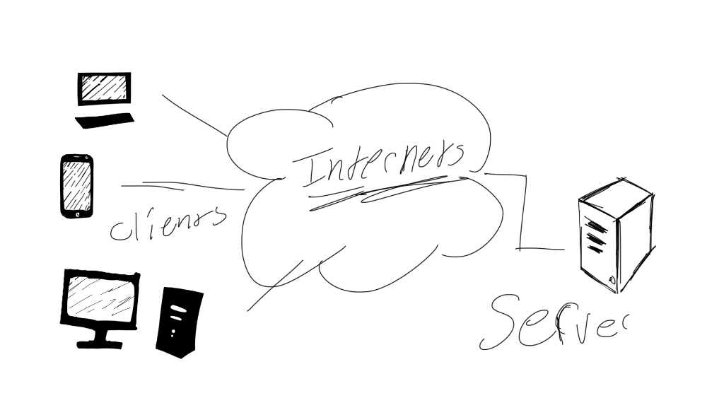

Encryption
by Willow Herban
 image design © Willow Herban
How does it work? (turning messages into secret code)
--based on the very old art of (the science of making secret codes)--uses computers and sets of computer instructions to turn plain text into an unreadable, jumbled code. To (change secret codes into readable messages) that ciphertext into plaintext, you need a number-based key to secretly code messages, a series of bits that(change secret code into understandable language) the text. The key is something only you or themeant receiver has in their possession. Computers are capable of breaking (turned into secret code) code by guessing a number-based key to secretly code messages, but for very fancy (or smart) sets of computer instructions like an elliptic curve set of computer instructions, this could take a very, very long time.
If you send a secret/unreadable email, only the person with the number-based key to secretly code messages can read it. If you're using a secret/unreadable internet connection to shop online, your information and credit card number are hidden from unauthorized users, like computer criminals, illegal (secretly recording/watching people), or identity thieves. If you (turn into secret code) data before syncing it with the cloud, the cloud--or anyone breaking into it--can't read that data. But (turning messages into secret code) can be used for bad, too. Ransomware attacks are becoming more common, also called denial of service (DOS) attacks that use (turning messages into secret code) software to lock users out of their computers until they pay a fee.
WHOLE DISKS-
Whole disk (turning messages into secret code), as the name hints, refers to the (turning messages into secret code) of a whole physical or logical disk. While this is now done mostly with software, hardware based disk (turning messages into secret code) is a growing technology which is expected to go past software products for whole disk (turning messages into secret code) over the next few years. This form of (turning messages into secret code) generally (turns into secret code) the whole contents of a disk or volume and (changes secret codes into readable messages)/encrypts it during use after a key has been given. This means the data is protected from situations like laptop/disk loss or theft where the data would be (turned into secret code)and require a key to (change secret codes into readable messages). It would not protect from situations like sending information over the network (e-mail, websites, etc) or from situations where the (changing secret codes into readable messages) key was already entered such as the user walking away from their logged-in computer. Single- user file/folder level- When an individual wishes to (turn into secret code) a single file or group of files there are (more than two, but not a lot of) options. Most (turning messages into secret code) software has the ability to (turn into secret code) files individually using a password or other key. Many (turning messages into secret code) programs have the ability to create a secret/unreadable "virtual drive". This is a secret/unreadable file that, when opened with the key, looks like another drive attached to the computer allowing the user to easily open and save files into a secret/unreadable area. Some other (online or paper forms that ask for a job, money, admission, etc.), like MS Office And OpenOffice, have built-in, single-file (turning messages into secret code) features. 2
MULTI- User File/ Folder Level-
Allowing many users to (at the same time) access (turned into secret code) information is more complicated than a single user. The (turning messages into secret code) software must allow the use of either many keys (i.e. one for each user) or a shared key (e.g. a shared password). Also, the software must deal with multi-user file locking issues (this is usually a problem with the virtual drive approach talked about/said in the last section).
This approach can provide an added layer of protection against the (telling to people/making known) of highly private data on file servers in the event they are damaged/agreed. It can also help protect against (telling to people/making known) on backup media as the files would remain(turned into secret code) when backed up.
This approach can get complicated if not all users have the (turning messages into secret code)software installed, or they are not configured regularly (all the time). This could lead users being unable to access secret/unreadable information or wrongly believing they have (turned into secret code) information when they have not. For these reasons, special attention should be paid to how (turning messages into secret code) software behaves and users should be educated to recognize the (turning messages into secret code) status of files.
DATABASE-
(turning into secret code) information in a (computer file full of information) can be done at a couple of levels. The computer program (using/getting to) the (computer file full of information)can (turn into secret code) information before putting it into the (computer file full of information). This needs/demands intelligence at the application level, but no added/more(computer file full of information) features. Many (computer files full of information) have built-in(turning messages into secret code) functions which computer programs can use to (turn into secret code) data as it is written. This usually needs/demands features at both the computer program and (computer file full of information) level. A (turning messages into secret code)computer program can sit between the computer program and (computer file full of information), (turn into secret code)ing/decrypting information as it is written and read. This Needs/demands buying and installing added/more software, but may not require changes to the computer program or (computer file full of information).
DB (combined different things together so they worked as one unit) (turning messages into secret code) DB backed application level (turning messages into secret code)
Application Level-
As talked about/said earlier, some computer programs that aren't specifically designed for(turning messages into secret code) do have basic (turning messages into secret code) functions. Especially, common working well and getting a lot done suites like Microsoft Office and OpenOffice contain file (turning messages into secret code) features. Be careful of the quality of the built-in (turning messages into secret code) features, even within the Microsoft Office product line, some versions (like Office 2007) have a good (machine/method/way), others have poor ones(like Office 2000 and earlier) and still others require proper setup to provide good protection (like Office 2003). These features can be very (conveniently nearby/useful) because they don't require added/more licenses, require less training and can be effective for both traveling and at rest(turning messages into secret code). Also, they can work well for file exchange since the receiver is more likely to have the ability to (change secret codes into readable messages) the file. In short, built-in (turning messages into secret code) functions can be convenient options, but you should research their effectiveness before using them.
Email Messages-
There are a couple of different levels to (turning messages into secret code) with email, first is(turning into secret code) just a political helpers file and second is (turning into secret code) a whole message. (turning into secret code) a political helpers file can be completed using a single-file (turning messages into secret code) process that "sticks" to the file. Naturally, the receiver must have a way of (changing secret codes into readable messages) the file. There are only a couple of commonly used email message (turning messages into secret code)technologies, especially S/MIME and PGP. While S/MIME support is (having different things working together as one unit) into many email clients, it needs/demands users to have trusted certificates which can be complicated to properly send out and use. Using PGP to (turn into secret code) email needs/demands installing software, but there are both free and commercial options.
Both of these technologies also allow for digital "signing" of email without (turning into secret code) it. This signing process allows the receiver to be certain a message was not changed traveling, but does not protect the content from prying eyes.
PGP/GnuPG Email clients with (combined different things together so they worked as one unit) S/MIME support
Network Traffic-
(turning into secret code) information while traveling on a network is one of the most common, and important, uses of (turning messages into secret code). One of the most popular forms of this (turning messages into secret code) is Secure Sockets Layer (SSL)/Transport Layer Security(TLS), commonly used to (turn into secret code) web traffic traveling. Any web computer program that transmits or collects sensitive information should (turn into secret code) the information using SSL/TLS. There are some other uses for SSL/TLS (turning messages into secret code), including securing (verifying someone's identity) for email communication between clients and servers. SSL/TLS can also be used for "tunneling" to (turn into secret code) other forms of network transmission that don't have their own (turning messages into secret code) features.
Another common network (turning messages into secret code) technology is Secure Shell (SSH) which is mostly used for secret/unreadable terminal connections (replacing telnet) and (turned into secret code) file moves (from one place to another) (SFTP replacing FTP). Like SSL/TLS, SSH can also be used for tunneling.
A more general form of network traffic (turning messages into secret code) is IP Security (IPSec), which operates at a more basic layer than SSL or SSH and can be applied to any network traffic. However, using IPSec needs/demands common setup between the two computers communicating, so it is generally used within a company/department rather than across the internet.
For wireless networks there are other (turning messages into secret code) options that only (turn into secret code) information between the computer and the wireless access point. For this reason, they only protect from (secretly watching and recording) on wireless and not after the information leaves the access point onto a wired network. The two most common forms are called Wired Equal Privacy (WEP) and WiFI Protected Access (WPA). WEP is no longer carefully thought about/believed a secure rules of conduct. WPA is much stronger, but has faults/problems and an updated WPA2 standard has been released which improves its security.